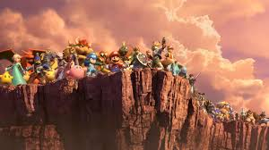
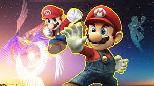

Igual que sus predecesores, se trata de un juego de lucha donde hay que debilitar a los rivales para expulsarles de los márgenes del escenario. El plantel está formado por personajes de otros videojuegos, tanto de Nintendo como de otras desarrolladoras independientes, e incluye a todos los combatientes de entregas anteriores. Además, puede ampliarse con la compra de contenido descargable. Los trofeos coleccionables han sido reemplazado por los «espíritus», un nuevo concepto inspirado también en personajes de videojuegos, que permiten mejorar las características del luchador antes de un combate.2 El título admite hasta ocho jugadores en modo local, se puede jugar en línea a través de Nintendo Switch Online, y es compatible con las figuras Amiibo y con Nintendo Labo.
Nuestra misión es proporcionar a jugadores de todas las edades una experiencia de juego emocionante y accesible que combine acción rápida, estrategia y diversión. A través de una diversa selección de personajes icónicos y escenarios interactivos, buscamos fomentar la competencia amistosa, la creatividad y la comunidad, creando momentos memorables para todos los aficionados.
Nuestra visión es ser la plataforma definitiva de juego competitivo y casual, reconocida globalmente por su innovación, diversidad y capacidad para unir a jugadores de todo el mundo. Aspiramos a evolucionar continuamente, ofreciendo nuevas formas de juego y manteniendo a nuestros personajes y escenarios tan vibrantes y emocionantes como siempre, mientras inspiramos a la próxima generación de jugadores y creadores.
